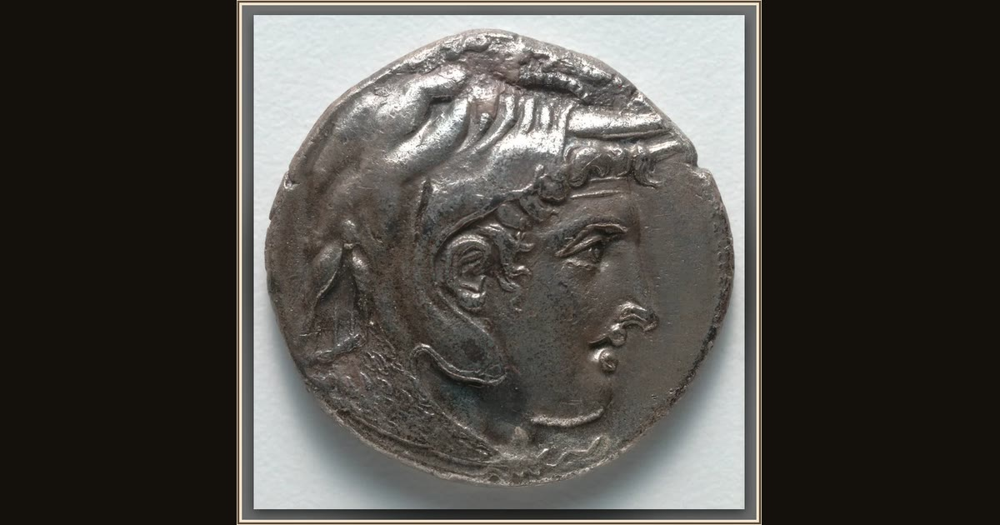

Tetradrachm: Head of Alexander III [The Great] (obverse); Athena (reverse)
Egypt, Greco-Roman period, reign of Ptolemy I, minted at Alexandria · 306 BCE · cma
A silver tetradrachm struck at Alexandria shows Alexander the Great in an elephant headdress; for Aristotle money is the agreed measure that lets unlike goods be exchanged (5.5). Explore its place in Aristotle's Nicomachean Ethics, Book V, section 5.